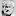
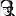
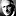
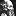
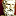
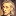
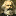
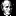
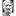
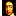

Assembled Western Philosophers

Aristotle

J. L. Austin


John Dewey
Epictetus
Epicurus


John Locke

Karl Marx
John Stuart Mill


Plato


Baruch Spinoza

Please note that links to on-line editions of the works of these philosophers, along with the additional on-line resources, will appear in a second browser window.
Everyone appears chronologically in the Philosophy Timeline, along with the following additional thinkers from the Dictionary of Philosophical Terms and Names:
- A
- Peter Abelard
- Jane Addams
- Alfred Adler
- Theodor Adorno
- Albert the Great
- Samuel Alexander
- Louis Althusser
- Anaxagoras
- Anaximander
- Anaximenes
- G.E.M. Anscombe
- Susan B. Anthony
- Antisthenes
- Kwame Anthony Appiah
- Archimedes
- Hannah Arendt
- Aristippus
- D.M. Armstrong
- Antoine Arnauld
- Kenneth Arrow
- John Austin
- A. J. Ayer
- B
- Charles Babbage
- Gaston Bachelard
- Francis Bacon
- Roger Bacon
- Annette Baier
- Kurt Baier
- Mikhail Bakunin
- Thomas Bayes
- Jeremy Bentham
- Nicolai Berdyaev
- Henri Bergson
- Isaiah Berlin
- Brand Blanshard
- Boethius
- Boetius of Dacia
- Niels Bohr
- Bernard Bolzano
- Bonaventure
- George Boole
- Susan Bordo
- Bernard Bosanquet
- Robert Boyle
- F. H. Bradley
- Franz Brentano
- C. D. Broad
- Giordano Bruno
- Martin Buber
- Jean Buridan
- Edmund Burke
- Joseph Butler
- C
- Edward Caird
- Albert Camus
- Georg Cantor
- Rudolf Carnap
- Carneades
- Lewis Carroll
- Ernst Cassirer
- Margaret Cavendish
- Pierre Charron
- Roderick Chisholm
- Noam Chomsky
- Chrysippus
- Alonzo Church
- Cicero
- Hélène Cixous
- Samuel Clarke
- W. K. Clifford
- Catherine Cockburn
- R.G. Collingwood
- Auguste Comte
- Étienne de Condillac
- Anne Conway
- Nicolas Copernicus
- Géraud de Cordemoy
- Hasdai Crescas
- Benedetto Croce
- Ralph Cudworth
- Richard Cumberland
- Nicolas of Cusa
- D
- E
- F
- G
- H.-G. Gadamer
- Galileo Galilei
- Mahatma Gandhi
- Pierre Gassendi
- C. F. Gauss
- John Gay
- Gersonides
- Edmund Gettier
- Arnold Geulincx
- al-Ghazali
- Carol Gilligan
- Charlotte Perkins Gilman
- Joseph Glanvill
- Kurt Güdel
- William Godwin
- Emma Goldman
- Nelson Goodman
- Antonio Gramsci
- T.H. Green
- Paul Grice
- Robert Grosseteste
- Hugo Grotius
- H
- Jürgen Habermas
- William Hamilton
- Stuart Hampshire
- Donna Haraway
- Sandra Harding
- R.M. Hare
- H.L.A. Hart
- David Hartley
- Nicolai Hartmann
- Friedrich Hayek
- Werner Heisenberg
- Virginia Held
- Helvetius
- Carl Hempel
- Heraclitus
- Herbert of Cherbury
- David Hilbert
- Hippias
- Sarah Lucia Hoagland
- Douglas Hofstadter
- Bell Hooks
- Grace Hopper
- Max Horkheimer
- Karen Horney
- Edmund Husserl
- Francis Hutcheson
- Hypatia
- I
- J
- K
- L
- Jacques Lacan
- Imre Lakatos
- Jean-Baptiste Lamarck
- Julien La Mettrie
- Susanne Langer
- P. S. de Laplace
- Michèle Le Dœuff
- Keith Lehrer
- V. I. Lenin
- G. E. Lessing
- Leucippus
- C. I. Lewis
- N.I. Lobachevsky
- Peter Lombard
- Konrad Lorenz
- Rudolf Hermann Lotze
- A.O. Lovejoy
- Lucretius
- Gyorgy Lukacs
- Jan Lukasiewicz
- Rosa Luxemburg
- J.-F. Lyotard
- M
- Ernst Mach
- J.M.E. McTaggart
- Moses Maimonides
- Nicolas Malebranche
- Thomas Malthus
- Benoit Mandelbrot
- Bernard Mandeville
- Mao Zedong
- Gabriel Marcel
- Marcus Aurelius
- Herbert Marcuse
- Jacques Maritain
- Marsilius of Padua
- Damaris Masham
- George Herbert Mead
- Alexius Meinong
- Gregor Mendel
- Moses Mendelssohn
- Maurice Merleau-Ponty
- Marin Mersenne
- Mary Midgley
- James Mill
- Marvin Minsky
- Michel de Montaigne
- Baron de la Montesquieu
- Henry More
- Thomas More
- N
- O
- P
- Thomas Paine
- William Paley
- Paracelsus
- Vilfredo Pareto
- Parmenides
- Blaise Pascal
- Giuseppe Peano
- Ralph Barton Perry
- Philo Judaeus
- Pico della Mirandola
- Max Planck
- Plotinus
- Jules Henri Poincare
- George Polya
- Karl Popper
- Porphyry
- H.H. Price
- Richard Price
- H.A. Prichard
- Protagoras
- P.-J. Proudhon
- Samuel Pufendorf
- Hilary Putnam
- Pyrrho of Elis
- Pythagoras
- R
- S
- Gaon Saadiah
- Comte de Saint-Simon
- George Santayana
- Ferdinand de Saussure
- F.W.J. von Schelling
- Friedrich Schiller
- Friedrich Schleiermacher
- Moritz Schlick
- Arthur Schopenhauer
- Erwin Schrüdinger
- John Duns Scotus
- John Searle
- Wilfrid Sellars
- Seneca
- Seth Pringle-Pattison
- Sextus Empiricus
- Shaftesbury
- Henry Sidgwick
- Siger of Brabant
- Peter Singer
- B.F. Skinner
- J.J.C. Smart
- Adam Smith
- Madeleine de Souvré
- Herbert Spencer
- Madame de Staël
- Elizabeth Cady Stanton
- C.L. Stevenson
- Dugald Stewart
- P.F. Strawson
- Francisco Suarez
- T
- U
- V
- W
- X
- Z